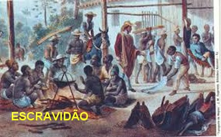
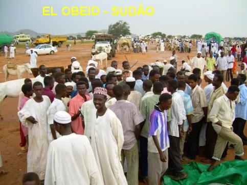
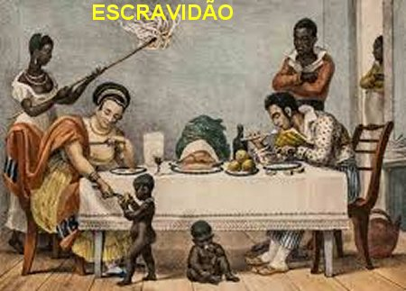

�ARMADILHAS DO MALIGNO�
NASCIMENTO E FAM�LIA
Josefina nasceu numa aldeia de
Darfur, chamada Olgossa, perto do Monte Agilerei, no Sud�o Ocidental, na
�frica, no ano de 1869. Seus pais carinhosamente criaram uma bela fam�lia,
formada por tr�s rapazes e tr�s meninas, sendo que duas das meninas eram g�meas.
Era uma fam�lia unida por um grande amor filial que exercitava uma preciosa
solidariedade. Eles pertenciam � tribo Dagi� e por isso mesmo, revelavam as boas
qualidades que tradicionalmente as pessoas cultivavam, sendo pac�ficas e muito
trabalhadoras.
Possu�am tamb�m uma razo�vel
situa��o econ�mico-financeira, que lhes possibilitaram adquirir um belo terreno com �timas
dimens�es, onde cultivavam v�rias planta��es e in�meras cabe�as de gado. Essas
condi��es permitiam que a fam�lia vivesse em plena harmonia e eram muito
felizes. E assim desfrutavam de todos os seus bens at� o dia em que a filha mais
velha foi raptada por estrangeiros armados e muito fortes, e foi vendida no
Mercado de Escravos, causando uma abomin�vel tristeza em todos os membros.
O RAPTO
Tempos depois ela ainda crian�a
com sete anos de idade e brincando com seus irm�os nos arredores da resid�ncia,
ouviu um terr�vel grito... Cheias de medo, as crian�as correram em dire��o ao
lar gritando: �S�o os
negreiros! Os negreiros!� Ao mesmo tempo
em que cada uma buscava se esconder daqueles homens ladr�es, terr�veis e ferozes,
que r�pidos como raios, acabaram caindo sobre ela, menina fr�gil, praticamente
sem defesa, e ent�o, eles amarraram os seus pulsos atr�s das costas e rapidamente
a levaram mata adentro, conforme procederam com outras jovens e rapazes, surpreendidos
nas casas e nos campos vizinhos. Josefina amargava a mesma experi�ncia da sua irm�,
que h� dois anos passados tinha sido raptada e nunca mais tiveram noticias dela.
O CALV�RIO DE BAKHITA
A partir deste dia, iniciava-se o
calv�rio desta pobre menina, que arrancada de sua fam�lia ia sentir em sua
pr�pria carne o qu�o abomin�vel e cruel pode chegar o ser humano. Seus pais e
irm�os choraram muito, fizeram o poss�vel e o imposs�vel para recuperar a filha
e irm�, mas n�o tiveram chance. Ela desapareceu sem que algu�m visse ou tivesse
noticias. Tamb�m a crian�a foi envolvida por uma imensa tristeza que apertava o seu
cora��o, deixando-a triste e angustiada. No per�odo de 1876 a 1882, ela foi
raptada e vendida por tr�s vezes, por bandidos espertos e maldosos. O segundo
bandido que a raptou, observando que ela nem se lembrava do pr�prio nome,
provavelmente por temor ou descontrole nervoso, conversando com seus comparsas
escolheram um nome para ela.
�Que nome dar a esta graciosa menina?� Um deles logo prop�s:
�Bakhita � um nome bonito e lhe trar� fortuna�. No idioma sudan�s significava
�afortunada�. Num canto de
uma sala suja e maltratada, ela e outra crian�a choravam desesperadas, rezando
e implorando piedade. No amanhecer, os dois homens a levaram para uma aldeia e a
jogaram numa alcova cheia de arreios e diversas coisas quebradas. Fato que anos
mais tarde, Josefina escreveu no seu di�rio: �O que eu sofri naquela espelunca, n�o � poss�vel dizer com palavras...
Lembro-me ainda daquelas horas angustiantes quando cansada de tanto chorar, caia
sem for�as no ch�o, enquanto a minha fantasia interior me transportava para bem
longe, reavivando-me uma imensa saudade, por n�o me encontrar junto dos meus
queridos e amados pais e irm�os�.

Depois de um
m�s sofrendo jogada em um lugar escuro, sem ar e luz, ela foi vendida novamente a um
profissional escravocrata, que estava numa caravana que passava naquele momento;
os escravos eram amarrados de dois em dois, ou tr�s em tr�s, com correntes e
argolas de ferro, que provocavam feridas sangrentas principalmente ao redor do
pesco�o. O medo daqueles escravos era muito grande, porque na verdade o sofrimento
era muito maior do que se imaginava. Depois de oito dias de viagem chegaram a um
lugar onde se praticava barbaridades com os escravos. Aqueles que suportavam e
n�o morriam eram vendidos pelo dobro do pre�o. Todavia no meio de muita confus�o,
passou numa charrete outro mercador de escravos. Ele parou e fez neg�cios com
o negociante local. Ela foi vendida novamente com uma amiga, e foram transportadas
e colocadas numa pequena e estreita cabana, onde permaneceram jogadas ao ch�o,
bem acorrentadas. Em desespero, as duas jovens planejaram fugir. Sempre
relembrando a sua fam�lia, Bakhita chorava com muita tristeza.
Certo dia o patr�o
mandou as meninas debulhar os milhos, e para poderem trabalhar normalmente, retiraram
as correntes das duas. Quando acabaram de
debulhar, aproveitando uma oportunidade
que o patr�o havia se afastado, elas fugiram em desespero, correndo pela
floresta enfrentando animais perigosos e quase foram devoradas por um le�o.
Bakhita, muito esperta, subiu numa �rvore e al�ou � amiga, escapando da terr�vel
fera que ainda permaneceu no local por longo tempo. E assim conseguiram escapar
da morte e prosseguiram viagem. Mas infelizmente, foram pegas num percurso
escuro e perigoso por um homem que surgiu nas matas repentinamente e agarrou-as
com toda viol�ncia e as fez escravas dele, jogando-as atr�s de uma casa velha
que cheirava mal, amarrando os p�s das jovens. Ele dizia que as levaria para a
sua casa, a fim delas conhecerem os seus pais. Inocentemente as pobres crian�as
acreditaram. Ficaram dias nesse local quando de repente, passou um comerciante
e comprou as duas jovens. Esse novo comerciante as levou para longe onde se
juntaram a uma caravana, que se dirigia para um Centro de Recolhimento de
escravos denominado: �El
Obeid�.
Nesse imenso campo
aberto, esse novo patr�o fazia um espet�culo, expunha os escravos � venda e come�ava
a perguntar quem d� mais? Quem d� mais? E quem dava mais levava o mais forte e
at� o mais bonito. Quando chegou a vez da pequena Bakhita, aproximou-se um
Senhor distinto e fez a compra, levando as duas jovens em viagem para bem longe.
CRESCEU SEM CONHECER DEUS
E assim o tempo ia passando.
Bakhita cresceu sem conhecer DEUS, mas tinha uma convic��o interior de que ELE
existia, porque em muitas oportunidades, sem saber como, ela se sentia protegida
por um Ser Superior. Ela olhava o sol e se deslumbrava com o amanhecer, com
aquele calor agrad�vel, aquela luz forte que infundia a vida. Em seu cora��o
formou-se uma s�lida convic��o, de que mais bela do que aquela vis�o devia ser O
Poderoso que criou tudo aquilo. E ent�o ficava imaginando:�Quem seria o Patr�o dessas coisas t�o belas?� E sentia uma vontade imensa de v�-lo, de conhec�-lo, para poder lhe
prestar uma carinhosa homenagem.
saber como, ela se sentia protegida
por um Ser Superior. Ela olhava o sol e se deslumbrava com o amanhecer, com
aquele calor agrad�vel, aquela luz forte que infundia a vida. Em seu cora��o
formou-se uma s�lida convic��o, de que mais bela do que aquela vis�o devia ser O
Poderoso que criou tudo aquilo. E ent�o ficava imaginando:�Quem seria o Patr�o dessas coisas t�o belas?� E sentia uma vontade imensa de v�-lo, de conhec�-lo, para poder lhe
prestar uma carinhosa homenagem.
Mas a realidade estava
sempre presente. Ela foi vendida v�rias vezes e condenada � escravid�o. Foi torturada,
marcada com ferro e riscada com a l�mina de uma navalha; passou sede e fome, foi
presa a correntes, esteve exposta a todo tipo de perversidade, mas carregava
dentro de si uma luz forte, que alimentava uma poderosa f�, que n�o sabia de
onde vinha e nem como denomin�-la, mas que lhe dava uma profunda e clara
certeza, de que havia algu�m maior, um todo poderoso que criou tudo o que
existe, e que possu�a um poder t�o imenso, que de t�o grande, tornava-se
imposs�vel para ela imaginar.
Tantos foram os seus
sofrimentos que at� se esqueceu do seu pr�prio nome. Posteriormente como j� mencionamos,
quando lhe colocaram o nome de Bakhita, que significa �afortunada� ela n�o chegou nem a compreender o significado deste nome, porque na verdade,
a sua vida estava recheada de tantos infort�nios e tristezas.
UMA ESPERAN�A

Em companhia
do novo dono, Bakhita chegou a uma mans�o onde encontrou duas criancinhas que logo
simpatizaram com ela e diziam: ela bonita, muito bonita. E Bakhita por sua vez,
com muita simpatia falava para as meninas: Voc�s duas � que s�o bonitas! E
assim ficou a servi�o dessa casa. Boa parte do dia Bakhita ficava a disposi��o
das meninas. Permanecia de c�coras junto do sof�, abanando com um grande leque o
rosto das duas patroazinhas que gostavam dela, e assim, como era natural,
Bakhita sentia prazer e procurava corresponder � simpatia das meninas buscando
proporcionar-lhes a boa comodidade que deviam ter, refrescando-as com o
movimento do seu leque.
Um dia Bakhita
recebeu uma ordem do filho do patr�o:�Traga-me aquele vaso que est� no sagu�o�. Era um vaso grande e muito pesado. Ela estava com medo de segurar o vaso,
por causa do grande peso dele. Mas com o maior esfor�o conseguiu levant�-lo e dar
os primeiros passos. Logo trope�ou e o grande vaso caiu de suas m�os, quebrando
ao cair no ch�o. Desesperada de pavor e medo suplicou o perd�o de seu patr�o. Mas
logo de inicio, como terr�vel resposta do homem, recebeu um forte castigo representado
por diversas chicotadas e um firme pontap� que a deixou desfalecida.
Imaginem a rudeza
do homem e sua abomin�vel ignor�ncia que de t�o grande, poderia deix�-la inutilizada...
Mas isso n�o aconteceu, ela sobreviveu mais uma vez, e novamente foi vendida para
outra fam�lia.
Todavia, a
�terr�vel esposa�de seu novo patr�o era muito perversa, era uma mulher verdadeiramente m�, que
controlava tudo. Todas as coisas eram vigiadas por ela, inclusive os escravos
que trabalhavam na casa, conforme ela mesma gostava de explicar.
Com gritos ela
exigia dos escravos:�Quero ser
sempre bem perfumada e, por favor, n�o fiquem cansadas de me abanar, pois n�o suporto o
calor, tamb�m quero ser bem abanada�.
Tempos depois
Bakhita e as outras escravas comentavam:�Ai de n�s, se por engano ou por causa do sono, tocasse num s� fio dos cabelos
dela... As chicotadas iam cair sobre n�s sem piedade�.
Pois n�o havia descanso para elas em nenhum momento. E assim, confirmou Bakhita:
�Durante tr�s anos que estive ao servi�o dela,
n�o me lembro de haver passado um dia sem feridas em alguma parte do corpo.�


 PR�XIMA
P�GINA
PR�XIMA
P�GINA
RETORNA
AO �NDICE